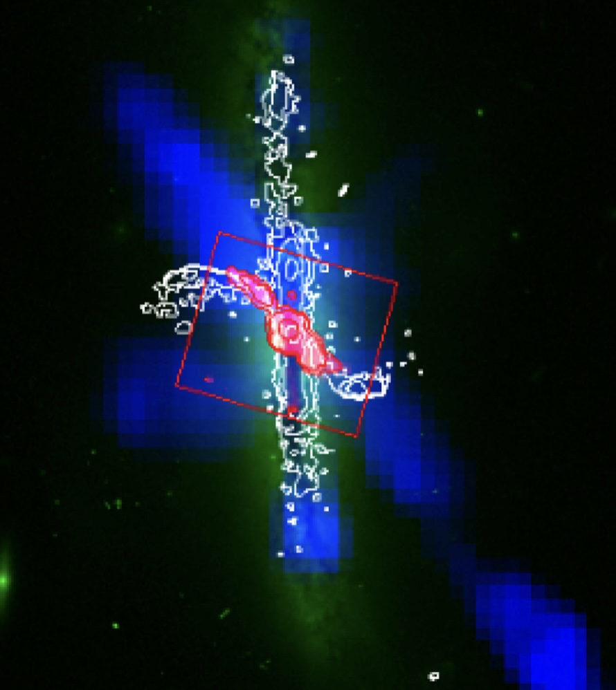

Multiphase Feedback in Merging Galaxies
The fate of galaxies is tied to the galactic nuclei, but how the central supermassive black hole governs its host’s growth is a fundamental key question that currently lacks clarity in both physical mechanisms and timescales. I am driven to resolve the detailed physics of how SMBHs grow and merge, particularly in black hole pairs as gravitational wave precursors. As a co-leader of a major Keck program, KOALA, targeting merging massive black holes at scales comparable to their spheres of influence, my work has demonstrated how nuclear molecular outflows driven by dual or obscured supermassive black holes governs the surrounding fuel for star formation – a process known as feedback that regulates the life cycle of galaxies.